This is the continuation to Fundamentals of parameter estimation - Part II. Exercise 3/8 from my optimal estimation course. The focus is on random vectors and unbiased linear MMSE estimation.
At the end of this exercise I should understand insights about the concept of covariance matrices and about unbiased linear MMSE estimation.
Context
Prior knowledge
I have a ship. The parameter vector to estimate is the position vector of that ship . The prior knowledge, obtained via dead reckoning, is captured as a prior expectation and a covariance matrix which expresses the prior uncertainty that we have about the position .
Measurement
In order to increase the accuracy, the navigator of the ship measures the direction of a beacon, e.g. lighthouse, relative to the ship as in the Figure below.
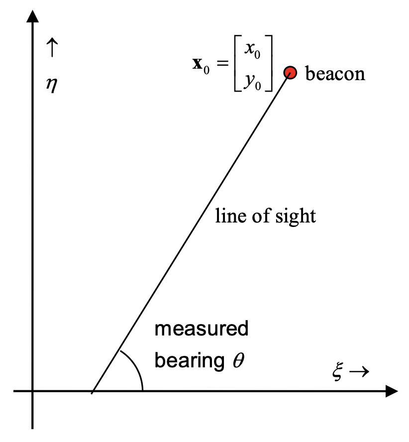
The beacon has a known reference position . The line of sight is defined by the position of the beacon and by the measured direction . The compass reading gives . The following equation defines the line of sight in the plane:
The measurement model
The relation between the ship’s true position and the true bearing is:
or, by substituting
The relation between the ship’s true position and the observed direction is nonlinear. To get a linear approximation, we apply a truncated Taylor series expansion to the sine and cosine functions:
Since , the factor almost equals . The latter equals the distance between beacon and ship. Therefore:
This can be written in the form with the following definitions
The distance is unknown, but can be estimated from prior knowledge of the ship’s position and the position of the beacon: . Assuming the measurement of the bearing has an uncertainty of , the standard deviation of is [radians].
The Case
Physical units are Nautical miles (Nm).
Uncertainty regions and principal axes
For normal distributions , the equation for the contour simplifies to: .
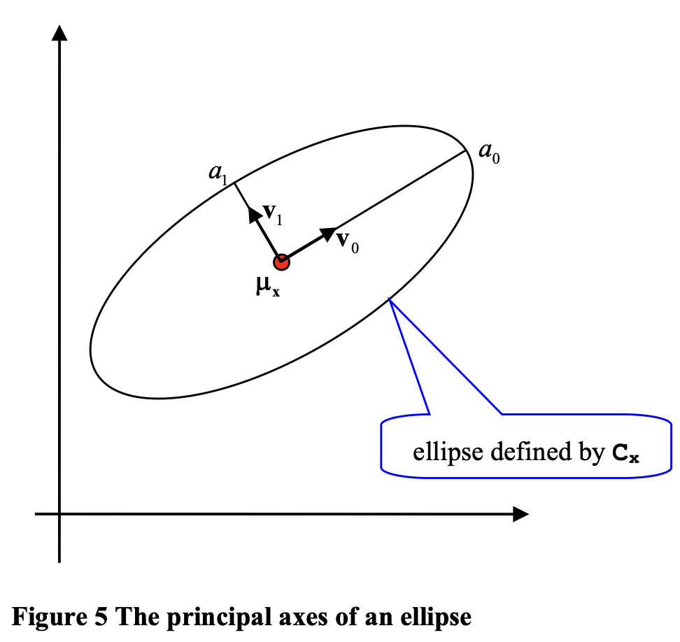
The eigenvectors and eigenvalues are solutions of and the corresponding scaling factors are
First topic: Determine the eigenvalues and eigenvectors of and draw the associated uncertainty region.
1.1 Generate a set of points on a circle with unit radius. The centre of the circle is positioned at the origin
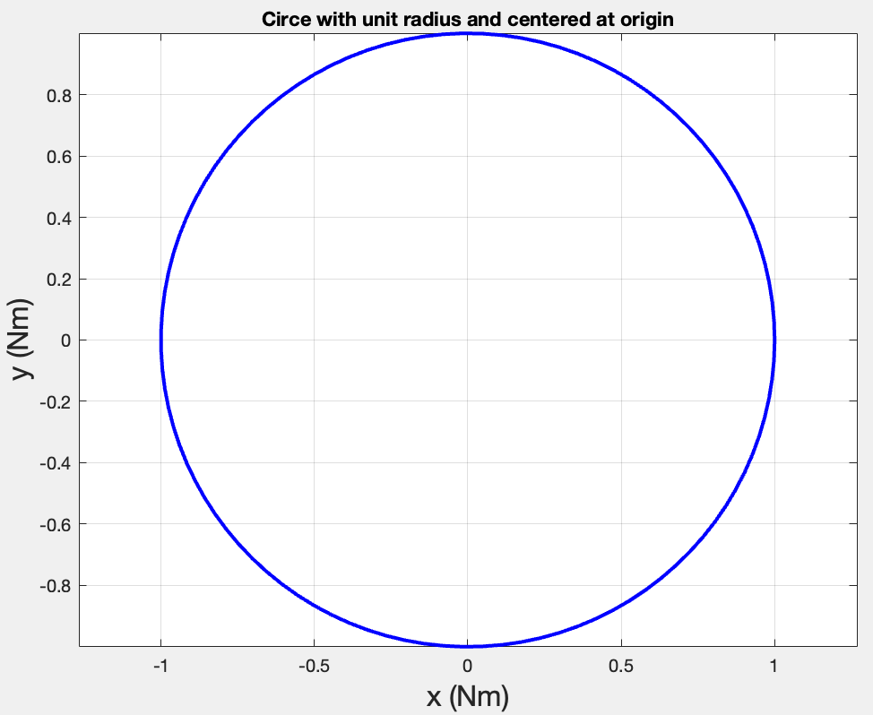
1.2 Scale the and coordinates of these points in accordance with the scaling factors and . The resulting points form an ellipse with the right shape, but not with the right orientation and position.
So based on the Figure 5 above, I need to extract the and scaling factors of the ellipse defined by . The corresponding scaling factors are .
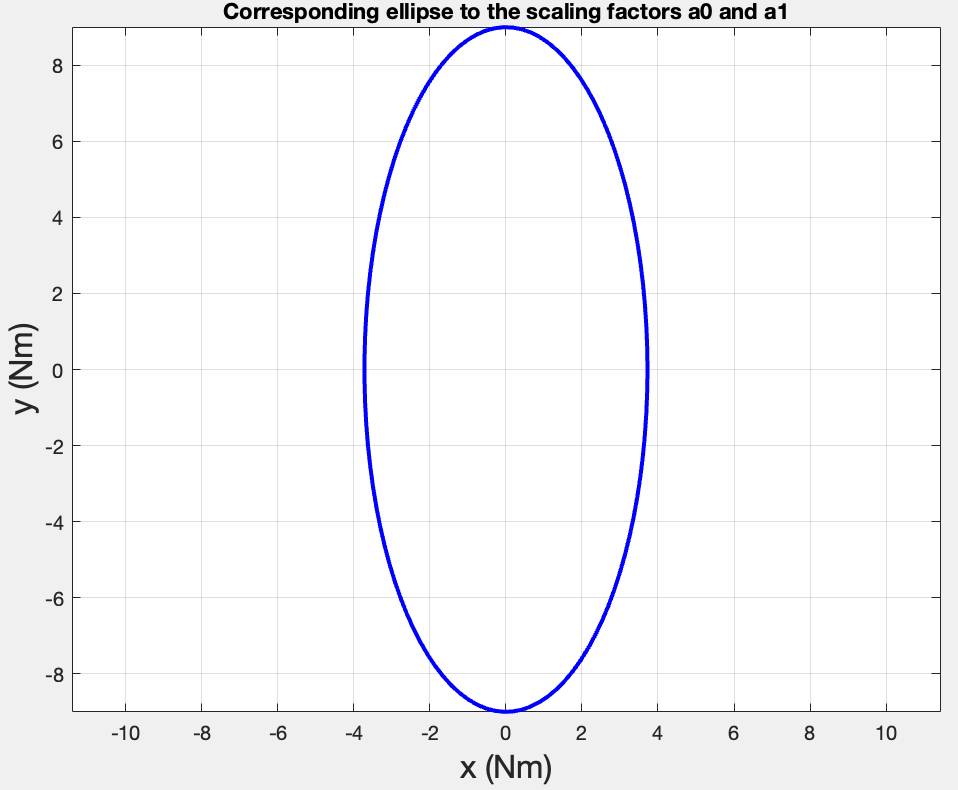
1.3 Rotate the set of points in accordance with the direction of the principal axes. The eigenvector-matrix is a rotation matrix.
This is really just a no-brainer, since the eigenvector-matrix is in itself the Rotation Matrix I need to apply.
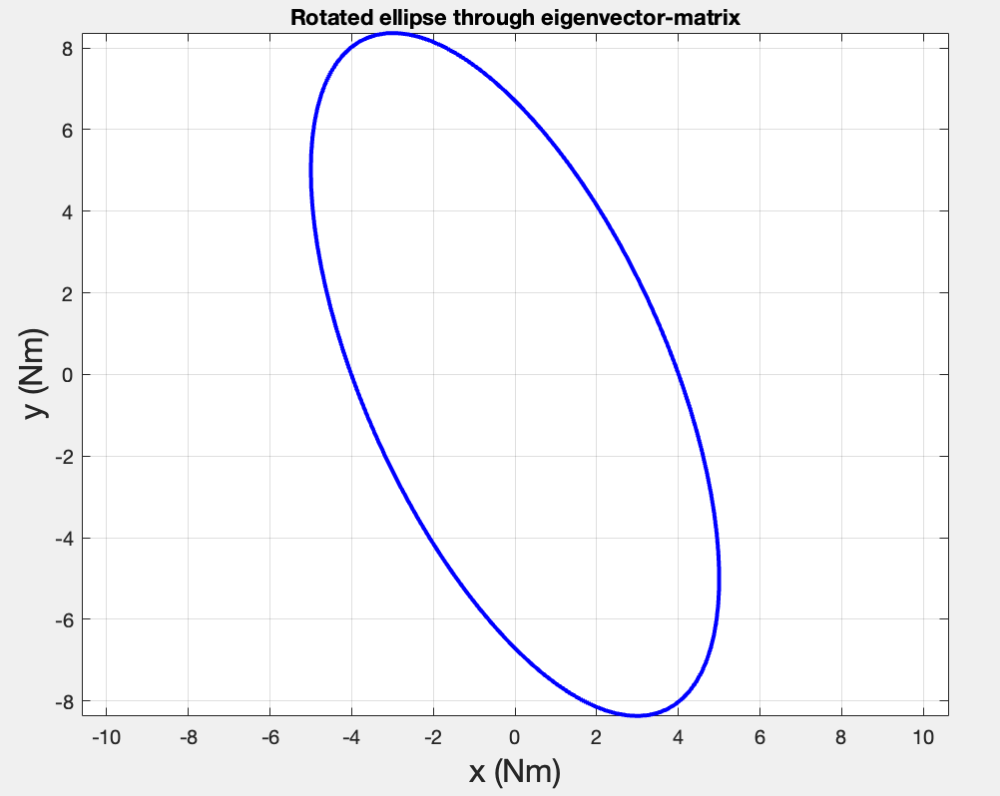
1.4+1.5 Shift the whole set to the position determined by . Plot the curve defined by the resulting set of points.
Again, I simply add to each axis the values from .
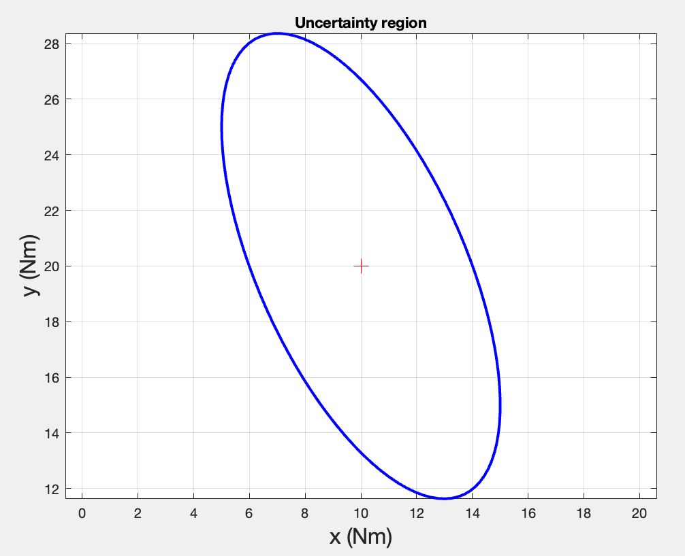
Second topic: Add the line of sight to the Figure. From the context, the uncertainty of the measured bearing is the standard deviation . The range defines an uncertainty region in the shape of a 2D cone. Visualize this cone in the graph by adding two dashed lines.
The line of sight is a line starting from the beacon position going in the direction of the measured bearing . So I must simply apply the equation:
where .
For the upper and lower bounds of the LoS (the 2D cone), I can simply reapply the formula like this:
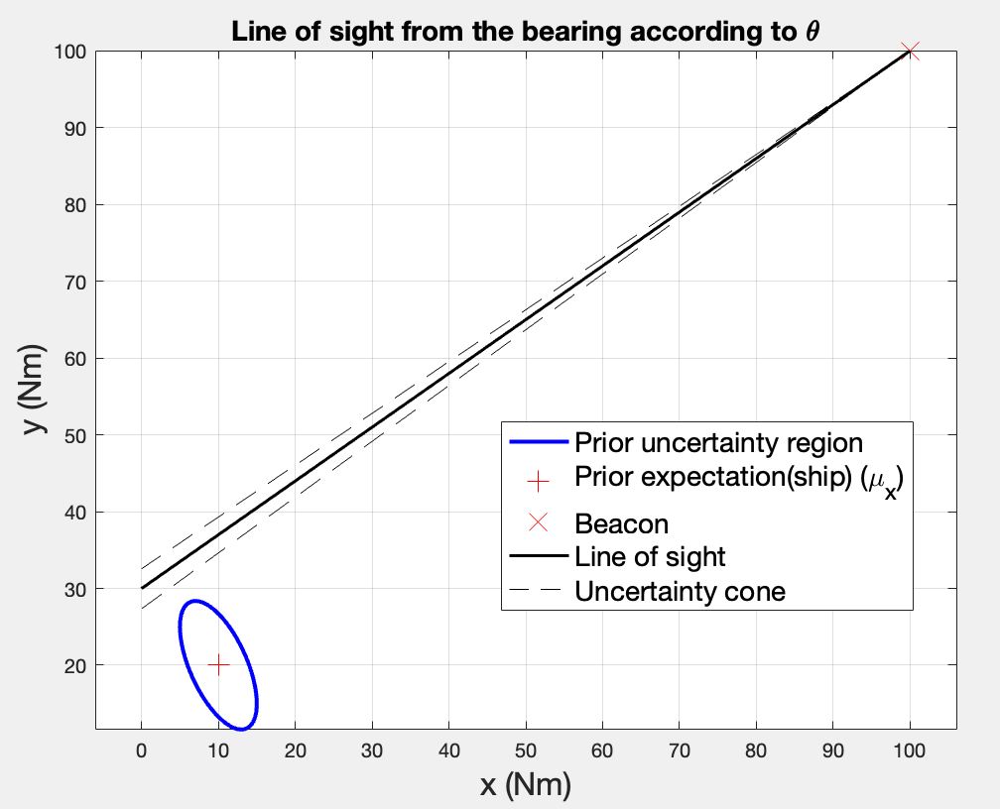
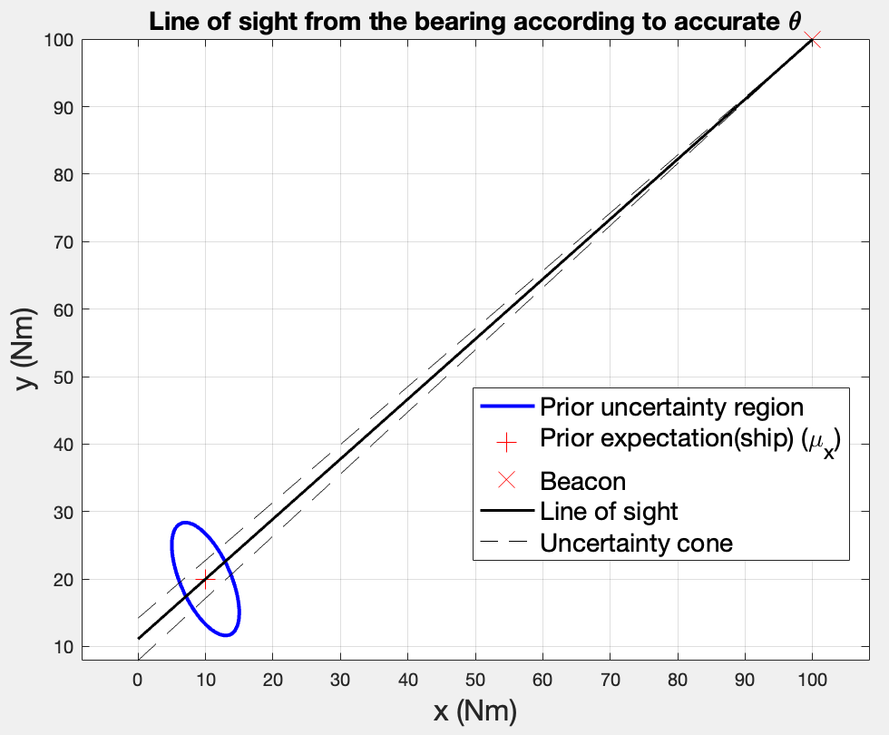
In the Figure above, in the left plot, the lines do not intersect the uncertainty region if I consider the compass reading of . This would indicate that the prior position estimate and the compass measurement are pointing at slightly different locations (so the reading of the compass is off). To see what the true bearing should be, I applied between the bearing and the prior estimate, and I get the result of degrees. In this case, the line of sight would pass straight through the ship’s position in the right plot.
Third topic: The linearized measurement function replaces the cone by a bar (i.e. two parallel lines). The width of this bar is . Calculate it and show the results.
According to the document, , where is the euclidean distance between the bearing and the prior position estimate. According to the calculations, the initial width of the bar is .
Although is the real measurement, I can use as a derived measurement instead.
Okk, but what is ? What does it represent?
While the actual physical measurement is the bearing angle , its relationship to the ship’s position is non-linear. To make this usable for linear estimation, the measurement model is linearized using a Taylor series expansion. This process groups the known variables—the beacon’s position and the measured angle - into a single known scalar value .
- Geometrically, the absolute value of z represents the shortest, perpendicular distance from the origin (0, 0) to the measured line of sight. Because it is a signed value, the positive or negative sign simply indicates which side of the origin the line falls on.
Basically, the true relationship is non-linear and I linearize it through the standard linear format . I will need it in the unbiased linear MMSE estimator.
The linearized bar consists of two parallel lines defined by
After rearranging, I get
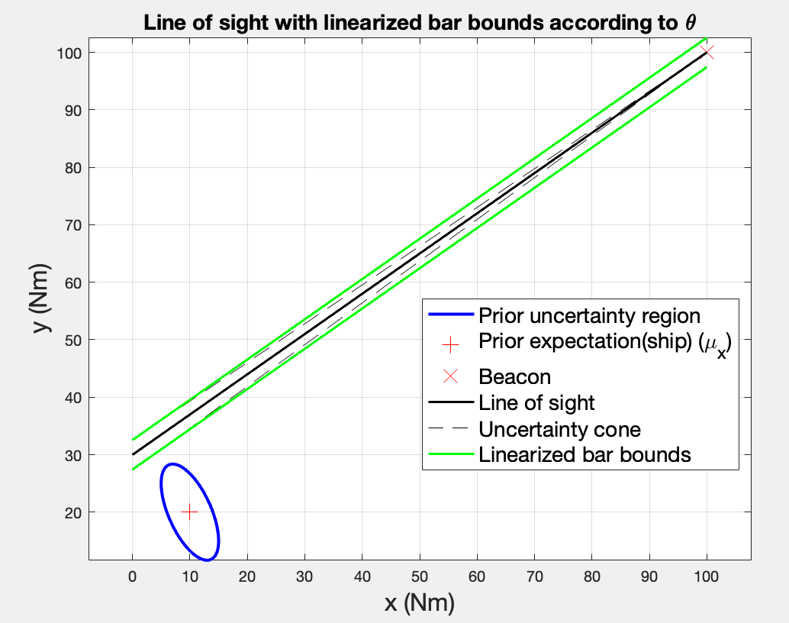
According to the plot, the results do make sense, since the cone and the bar are approximately equal in width near the ship’s position (they actually overlap, since the dashed line of the cone is no longer visible), which is where the linearization is valid. Further away from that, the approximation becomes less accurate.
Fourth topic: Determine the derived measurement , the measurement matrix , and the Kalman Gain matrix. The covariance matrix of the measurement noise is . Next, calculate the unbiased linear MMSE estimate of the position and the corresponding (error) covariance matrix.
For the first part, I already had to compute the derived measurement in the last question, and its value is which makes sense. The minus sign signals that the side on which the shortest perpendicular falls on the line of sight is to the left of the origin. The actual distance would be .
Since , the actual values of the measurement matrix would be . It maps the 2D position to the scalar measurement.
The Kalman Gain (taken from eq. 3.33 from the book) weights how much to trust the measurement versus the prior knowledge. The actual values are .
The updated estimate depends mostly on the innovation . The Kalman Gain transforms the innovation into a correction term that represents the knowledge that we have gained from the measurements.
When you invert a covariance matrix, you get the information matrix. Just a reminder.
The updated covariance (taken from eq 3.44 from the book) represents the reduced uncertainty after incorporating the measurement. The actual values are .
Fifth topic: Draw the uncertainty region of the estimate. That is, plot the posterior mean and covariance matrix.
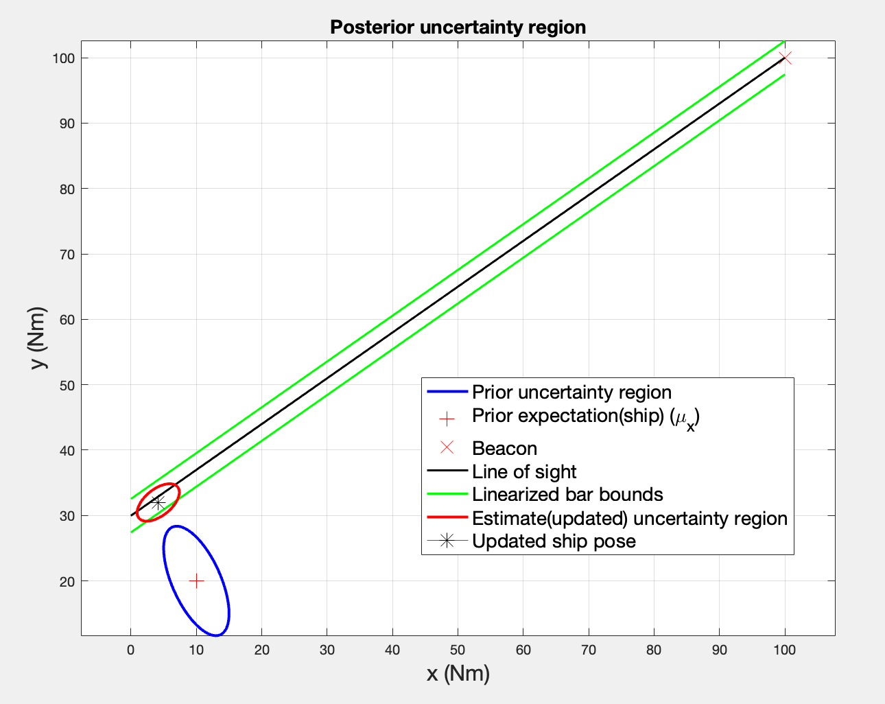
Now, based on the updated information, the ship’s updated uncertainty region falls within the designated bounds of the line of sight.
Sixth topic: Repeat questions 2 to 4 a number of times, but with varying values of and explain what you see.
The term directly influences the width of the linearized bar width and the covariance matrix of the measurement noise. Therefore, if the bearing uncertainty increases, then the update would take the measurement less into consideration, since the Kalman Gain has it in the denominator and the updated covariance matrix computes the error term based on its inverse.
However, since the uncertainty increases, that also increases the change of the initial guess to fall more and more within the linearized bar width. The updated position is more than likely to fall within the bounds, but the uncertainty also increases. This suggests that the lower the bearing uncertainty, the better and more accurate will the updates be, and a narrower space for uncertainty.
- An interesting observations is that as , the posterior converges towards the prior. That happens because and , meaning the measurement holds no value and no influence to the update.
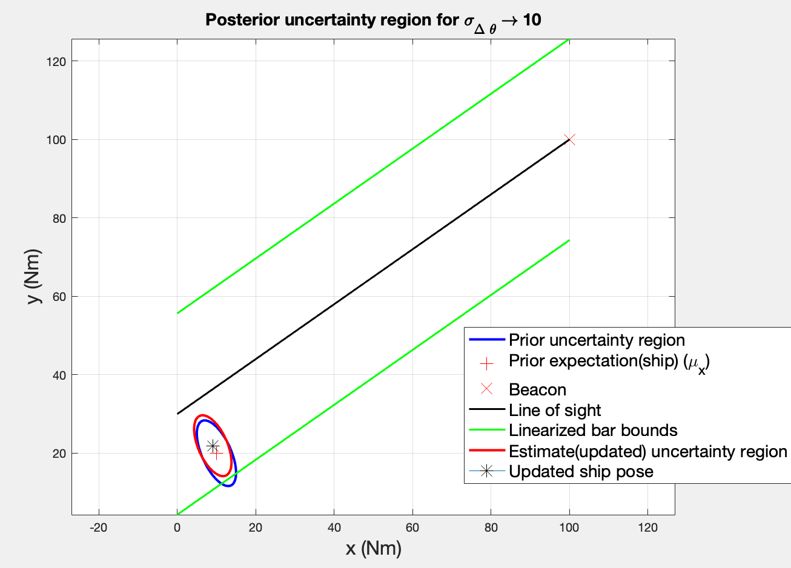
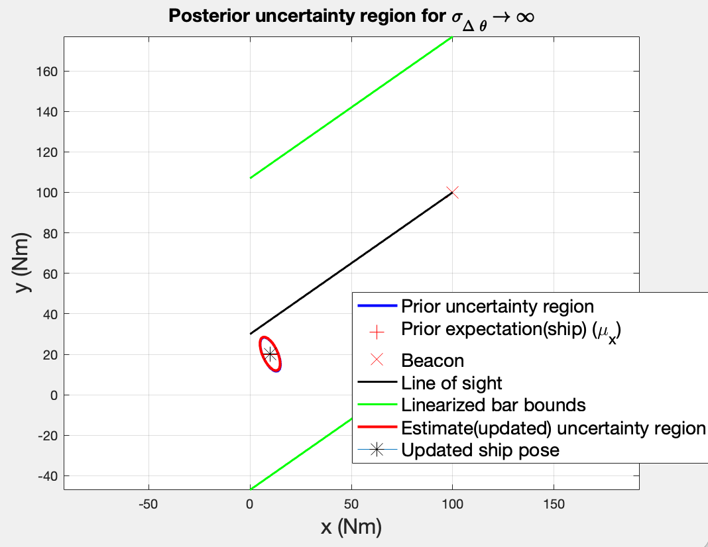
- As , there is no real uncertainty region, because it would mean we would trust the measurement completely and the posterior ellipse collapses onto the line of sight.
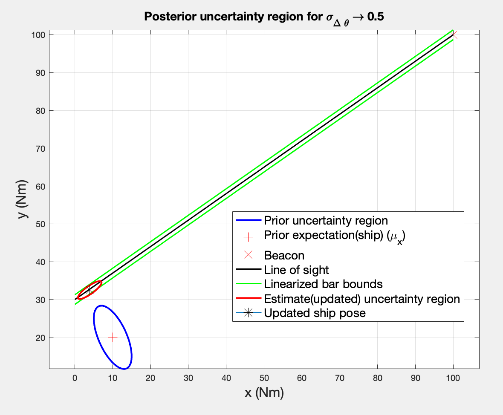
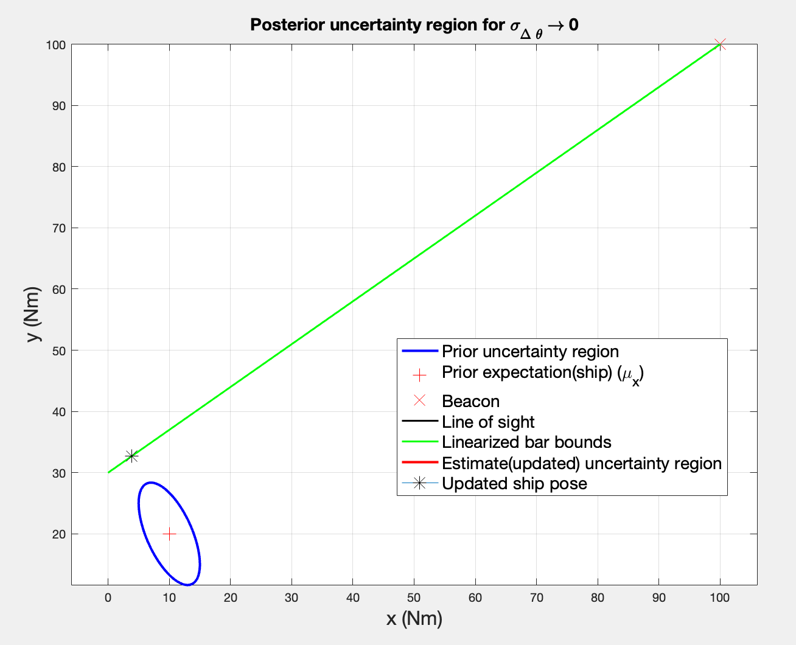
Seventh topic: Repeat question 2 up to 4 a number of times, but with varying by .
- If increases, that means a larger prior uncertainty, which leads the Kalman Filter to trust the measurement much more. While the posterior will be placed inside the bar width, the uncertainty region grows bigger, which still translates to possible errors.
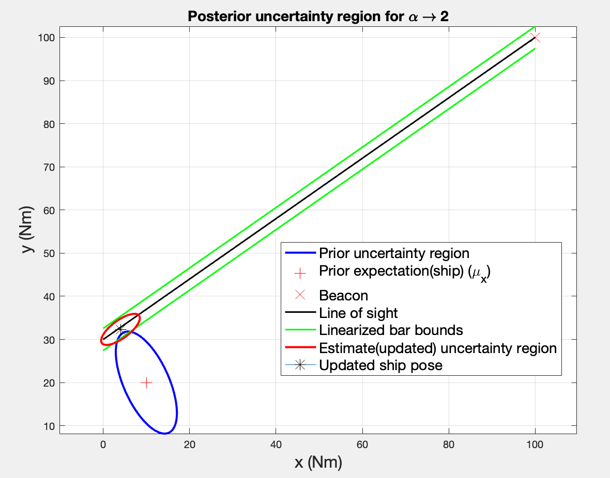
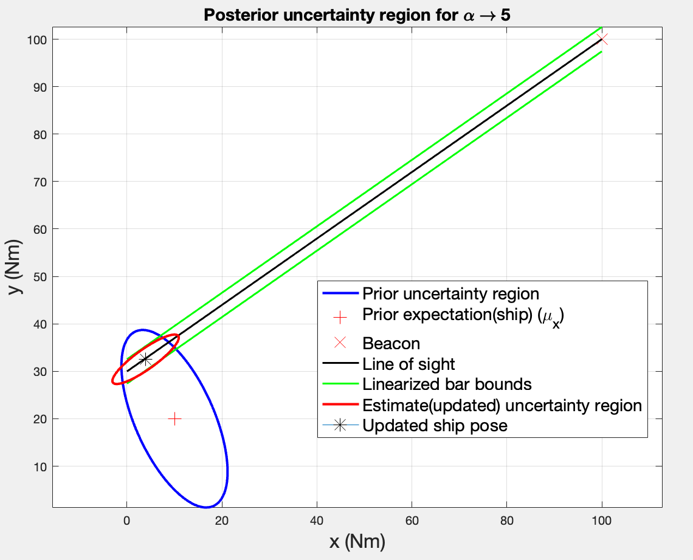
- As decreases, that translates into trusting the prior more. Therefore, the posterior will incline towards and not .
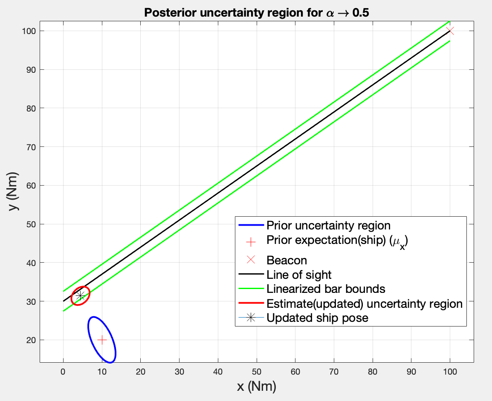
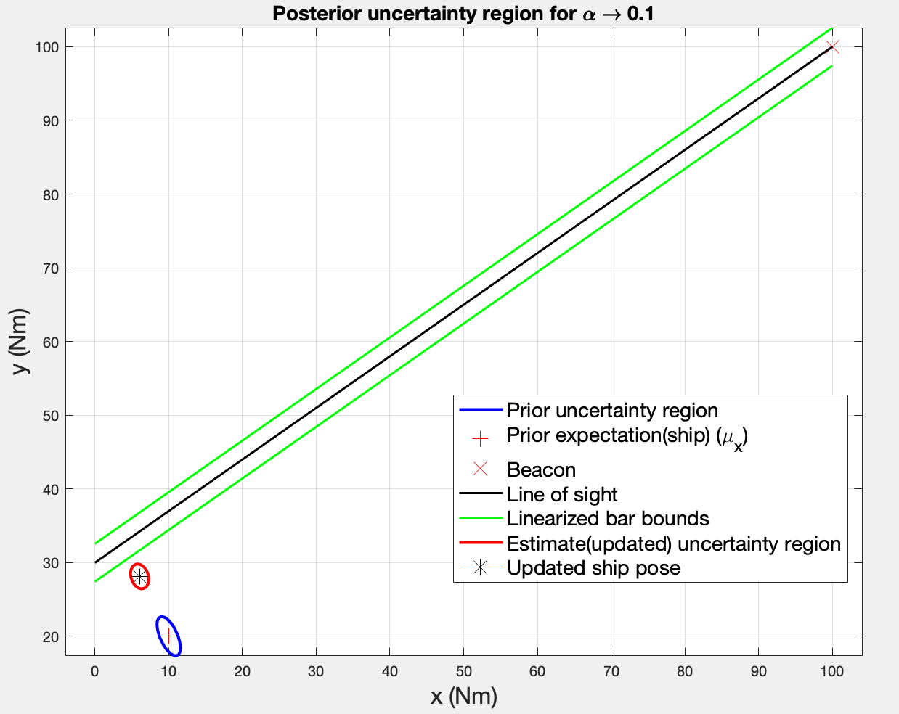